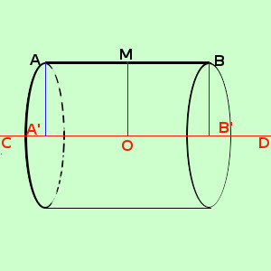

|
 M e' il punto medio di AB O e' il punto di intersezione dell'asse del segmento AB con l'asse di rotazione CD In pratica in questo caso si tratta di un cilindro di altezza AB=A'B', in cui il raggio di rotazione corrisponde ad OM parte dell' asse del segmento AB compresa fra il segmento stesso e l'asse di rotazione CD, quindi abbiamo che vale la formula Area = 2π OM · A'B' |